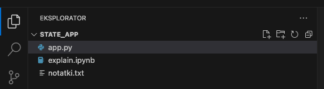
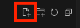

Visual Studio Code - instalacja i konfiguracja¶
Visual Studio Code to darmowe narzędzie do edycji kodu tzw. IDE (Integrated Development Environment), które jest dostępne na Windows, Mac i Linux. W tym dokumencie dowiesz się jak zainstalować Visual Studio Code, jak korzystać z niego oraz jak zainstalować pluginy.
Jak zainstalować Visual Studio Code?¶
- Uruchum link: https://code.visualstudio.com/download
- wybierz Windows jeśli masz Windowsa, Mac jeśli masz Maca, Linux jeśli masz Linuksa
- po kliknięciu rozpocznie się pobieranie instalatora
- uruchom instalator
- postępuj zgodnie z instrukcjami na ekranie
- pamiętaj, aby utworzyć skrót na pulpicie
Jak zapisywać zmiany w pliku?¶
Aby zapisać zmiany w pliku w Visual Studio Code:
- w górnym pasku menu kliknij
Plik>Zapisz

- lub wciśnij
ctrl + s(jednocześnie kliknijctrlis) w Windows - lub
cmd + sw Macos (jednocześnie kliknijcmdis)
Jak chować Eksplorator plików i folderów?¶
Eksplorator plików i folderów to lewa kolumna w Visual Studio Code, w której możemy przeglądać pliki i foldery w naszym projekcie.

Aby schować Eksplorator plików i folderów w Visual Studio Code:
- kliknij ikonę Eksploratora w lewym górnym rogu

- lub
ctrl + b(jednocześnie kliknijctrlib) w Windows - lub
cmd + bw Macos (jednocześnie kliknijcmdib)
Jak otwierać folder w Visual Studio Code?¶
Aby otworzyć folder w Visual Studio Code:
- w górnym pasku menu kliknij
Plik>Otwórz folder - wybierz folder, który chcesz otworzyć (ale w niego nie wchodź)
- kliknij
Otwórz

Jak otwierać terminal w Visual Studio Code?¶
Aby otworzyć terminal w Visual Studio Code:
- w górnym pasku menu kliknij
Terminal>Nowy Terminal
Jak dodawać pliki w Visual Studio Code?¶
Aby dodać plik w Visual Studio Code:
- kliknij ikonę nowego pliku w Eksploratorze plików i folderów

- wpisz nazwę pliku
- naciśnij
Enter
Alternatywnie:
- kliknij prawym przyciskiem myszy na folderze w Eksploratorze
- wybierz
Nowy plik - wpisz nazwę pliku
- naciśnij
Enter
Jak dodawać foldery w Visual Studio Code?¶
Aby dodać folder w Visual Studio Code:
- kliknij ikonę nowego folderu w Eksploratorze plików i folderów

- wpisz nazwę folderu
- naciśnij
Enter
Alternatywnie:
- kliknij prawym przyciskiem myszy na folderze w Eksploratorze
- wybierz
Nowy folder - wpisz nazwę folderu
- naciśnij
Enter
Jak korzystać z palety poleceń w Visual Studio Code?¶
Paleta poleceń to narzędzie, które pozwala na szybkie wyszukiwanie i uruchamianie poleceń w Visual Studio Code.

Aby otworzyć paletę poleceń w Visual Studio Code:
- w górnym pasku menu kliknij
Wyświetl>Paleta Poleceń - lub wciśnij
ctrl + shift + p(jednocześnie kliknijctrl,shiftip) w Windows - lub
cmd + shift + pw Macos (jednocześnie kliknijcmd,shiftip)
Jak zainstalować plugin/rozszerzenie w Visual Studio Code?¶
Aby dodać nowy plugin (rozszerzenie) w Visual Studio Code:
-
Otwórz Panel Rozszerzeń
- W lewym bocznym panelu znajduje się ikona „Rozszerzenia” (Extensions), która wygląda jak mała ikona z czterema kwadratami. Kliknij ją.
- Alternatywnie możesz użyć skrótu klawiszowego Ctrl + Shift + X (Windows/Linux) lub Cmd + Shift + X (macOS), aby otworzyć Panel Rozszerzeń.

-
Wyszukaj Plugin (Rozszerzenie)
- W polu wyszukiwania, które znajduje się na górze panelu Rozszerzeń, wpisz nazwę pluginu, który chcesz zainstalować.
- Visual Studio Code przeszuka dostępne rozszerzenia w marketplace i wyświetli wyniki poniżej.

-
Wybierz Plugin
- Kliknij na wybrane rozszerzenie z listy wyników wyszukiwania, aby zobaczyć więcej szczegółów na jego temat, takie jak opis, liczba pobrań i oceny.

-
Zainstaluj Plugin
- Po prawej stronie panelu, po kliknięciu na rozszerzenie, zobaczysz przycisk „Install”. Kliknij ten przycisk, aby rozpocząć instalację.
- Po kilku sekundach (w zależności od wielkości rozszerzenia i prędkości internetu), rozszerzenie zostanie zainstalowane.

-
Zrestartuj Visual Studio Code (jeśli wymagane)
- Niektóre rozszerzenia mogą wymagać ponownego uruchomienia Visual Studio Code, aby zadziałały poprawnie. Jeśli pojawi się takie powiadomienie, zamknij i ponownie uruchom program.
-
Sprawdź Zainstalowany Plugin
- Po zainstalowaniu, rozszerzenie będzie widoczne w sekcji „Zainstalowane” w Panelu Rozszerzeń.
- Możesz teraz używać zainstalowanego rozszerzenia w swoim projekcie.